The numbers above bar plots are percentages. Any dotted lines on histograms are the mean for that variable.
Sex/Gender are nearly identical.
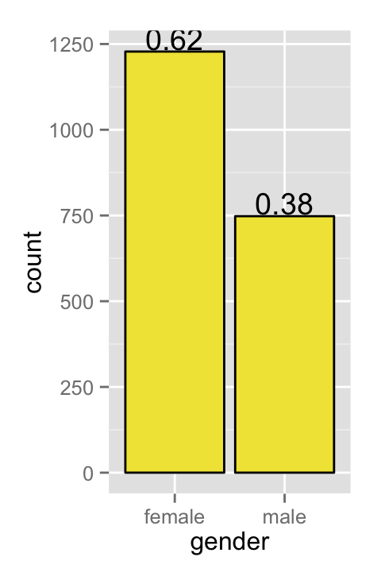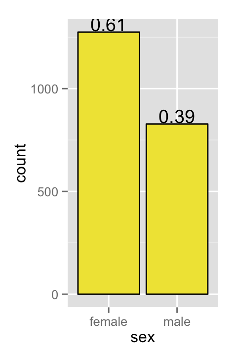
6% of people’s gender was reported to be wrong. As a reference point, 7% of people’s names and factory line, and 14% of people’s salary amount were reported to be wrong:
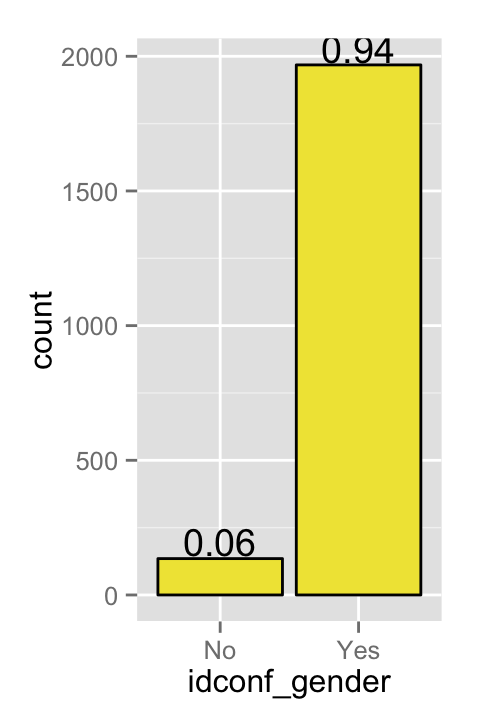
Of the 6%, more Males (previously labeled as females) correcting their gender. This may be indicative of hijrahs.
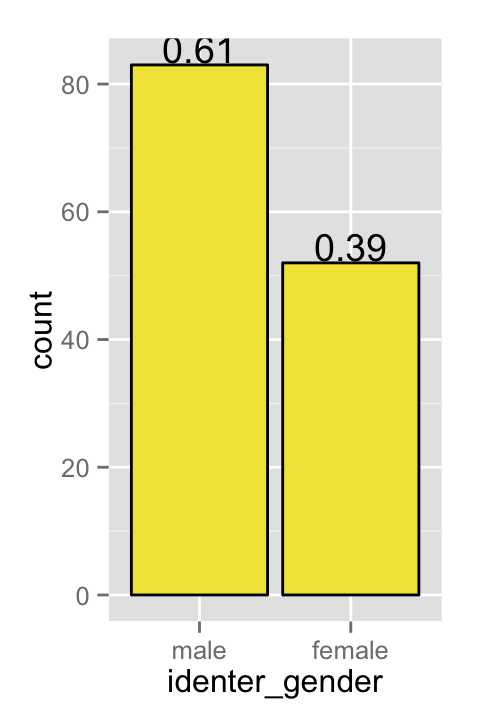
No surprises here: 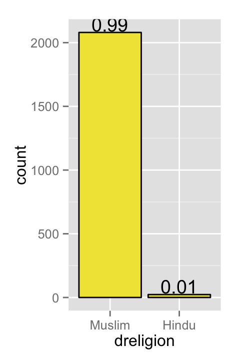
Does the respondent have children (left) and whether or not the children reside with the respondent (right). Children overwhelmingly not living with parent.
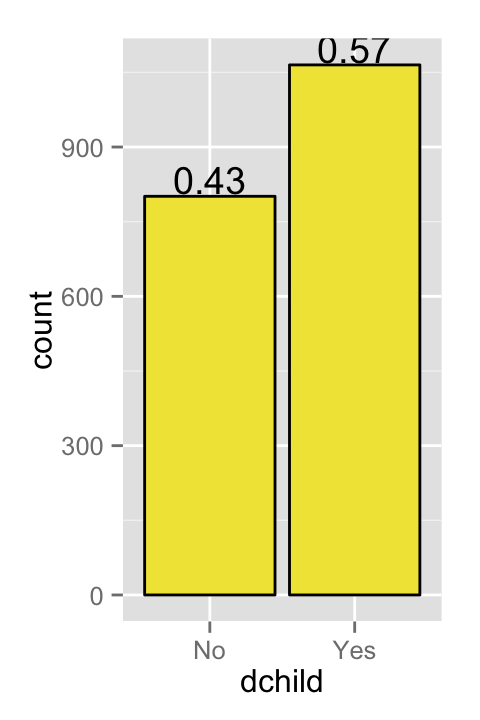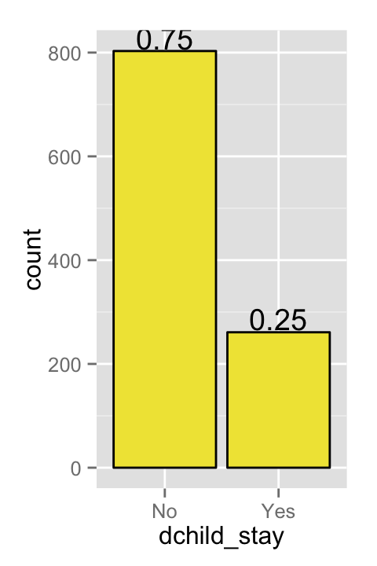
Marriage numbers (left) and marriage numbers by gender (right):
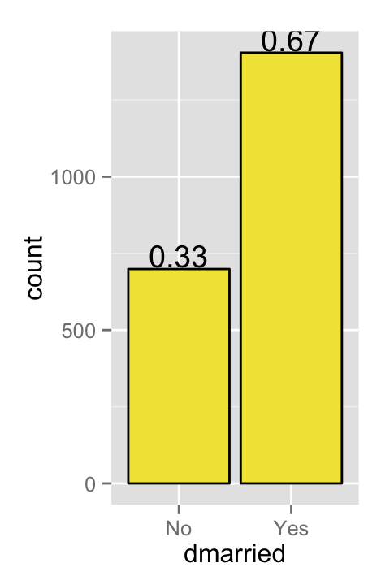 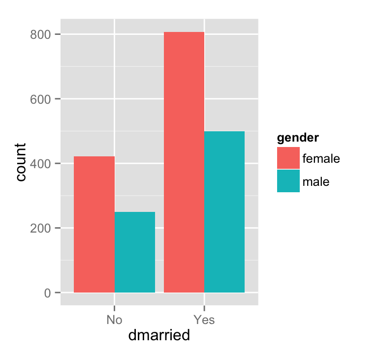
60/40 split between those that live/don’t live with their spouse:
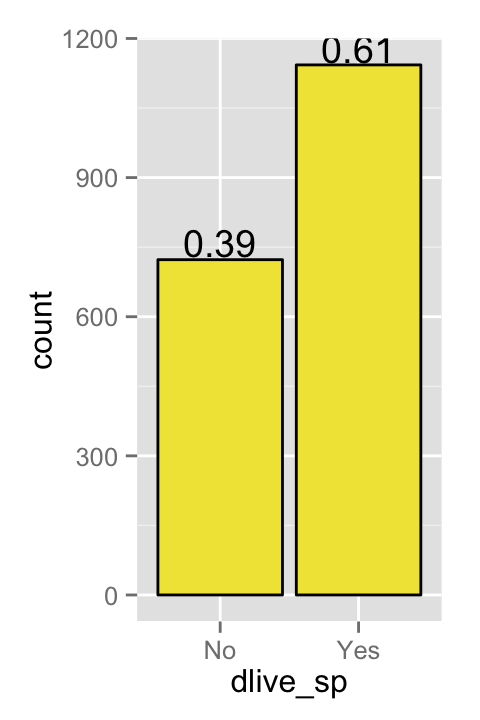
Average of 4-5 dependent family members on respondent for both food (left) and income (right).
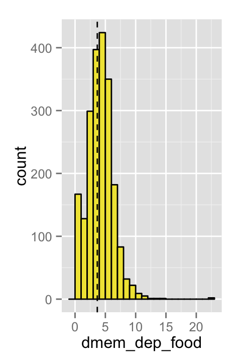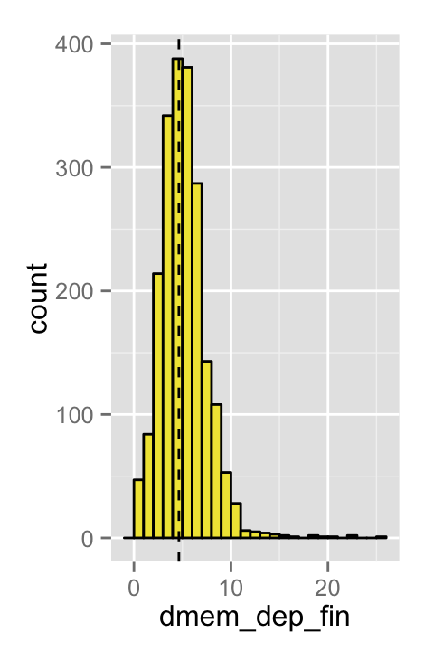
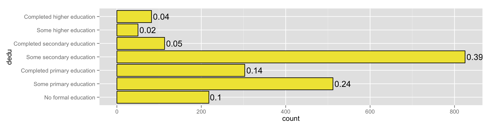
Literacy in Bangla is 60/40 (left), however for English it’s only 10/90 (right):
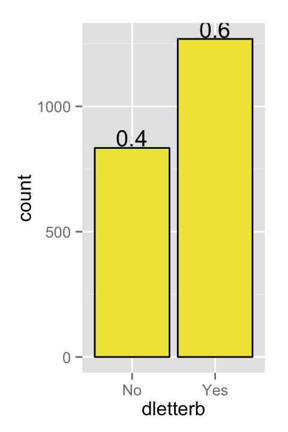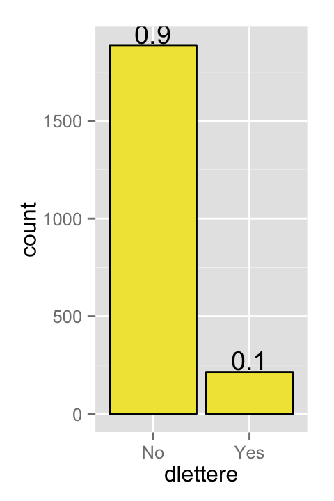
Years at any factory (top) and years at current job (bottom): 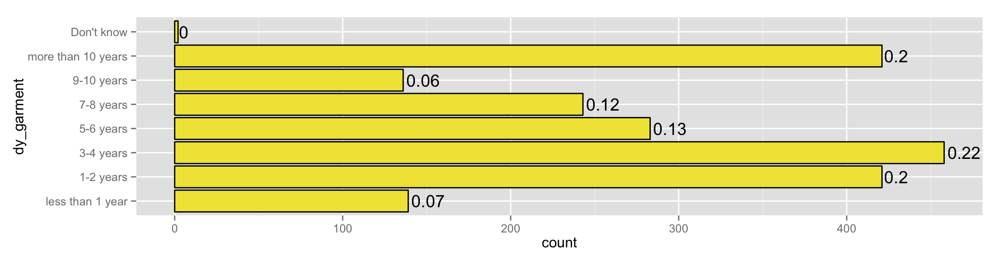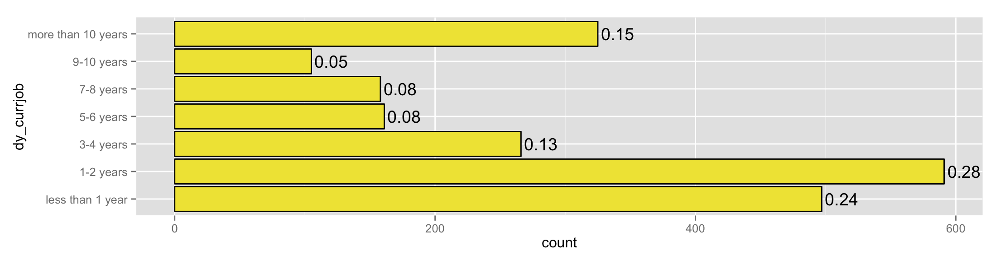
Years intended to work in the future. Majority of respondents intend to work 1-6 years longer:
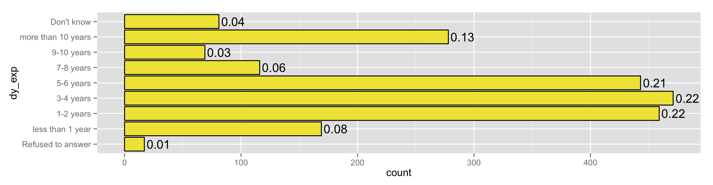
Tri-modal salary spread:
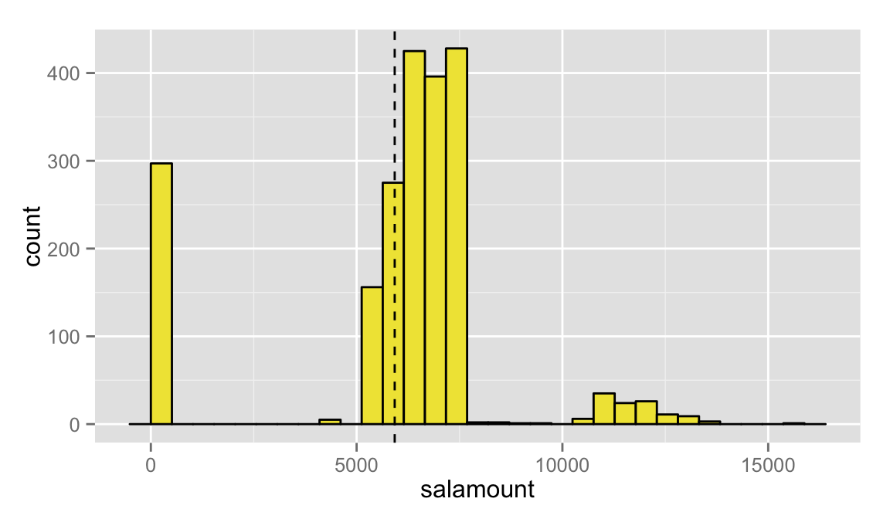
A look at salary by gender (top), and by gender + marriage (bottom). Noteworthy that no real difference on aggregate for income, and that married males make more than unmarried males:
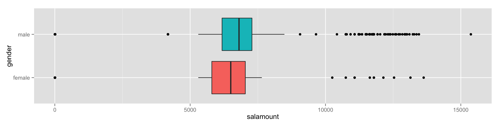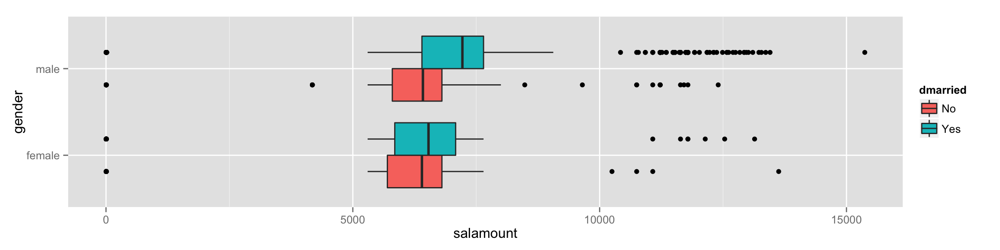
A look at spousal salary. Noteworthy that 23% of respondent spouses’ do not have a salary: 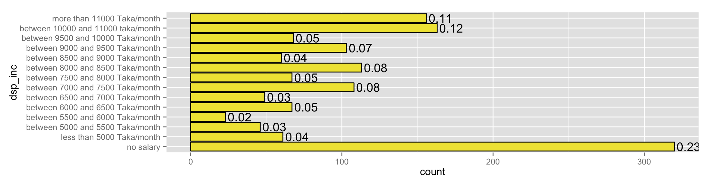
Overtime earnings overall (top) and by gender (bottom): 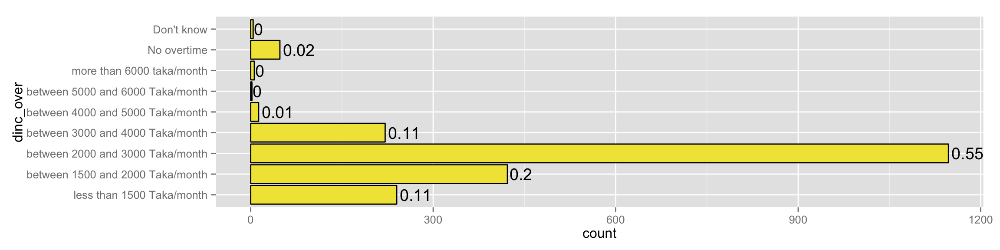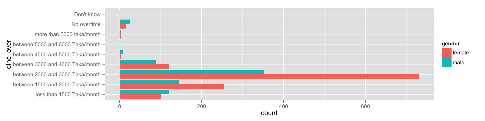
The following section has questions based on the 10 step ladder; the first being the worst and the tenth being the best.
A quarter of respondents feel they have maximum street cred: 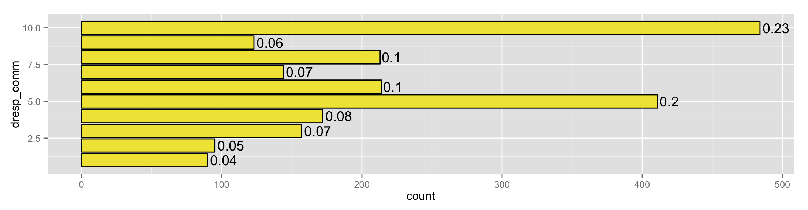
Most feel like everything is in it’s right place: 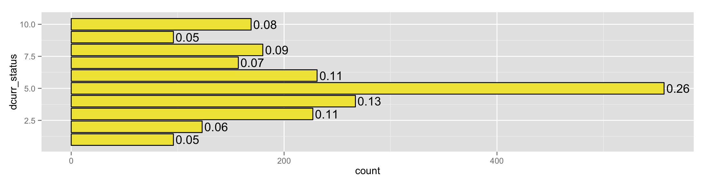
Still most feel like things will get dramatically better: 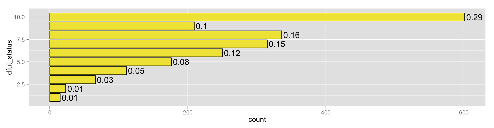
And most feel things significantly improved: 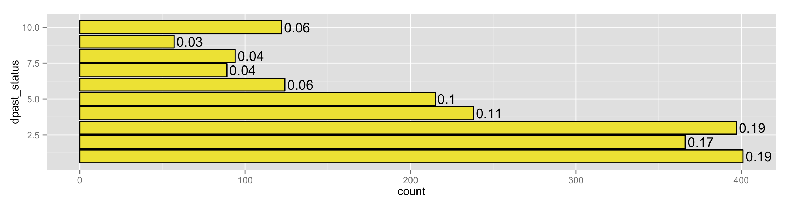
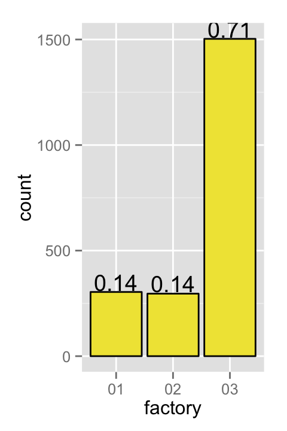
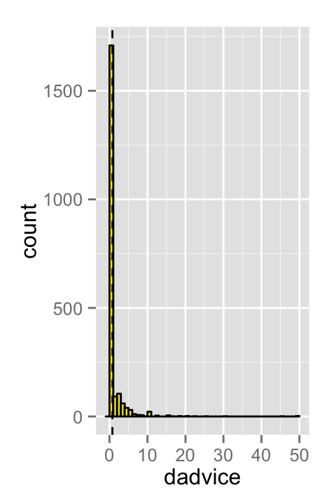